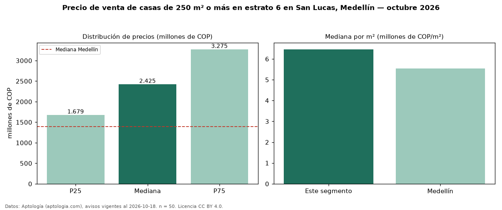

Precio de venta de casas de 250 m² o más en estrato 6 en San Lucas, Medellín — octubre 2026
Con 50 avisos vigentes, el precio mediano de casas de 250 m² o más en estrato 6 en venta en San Lucas, Medellín es COP 2,42 mil millones. Frente a la mediana de las casas en estrato 6 en venta de San Lucas (COP 1,69 mil millones, n = 81), queda 43 % por encima; este segmento reúne el 62 % de esos avisos. Por metro cuadrado, la mediana es COP 6,46 millones/m² (n = 50), 0 % por encima de las casas en estrato 6 en venta de San Lucas (COP 6,44 millones/m²). El área mediana anunciada es 348 m². El segmento con más oferta es el de 3 o más habitaciones (50 avisos, mediana COP 2,42 mil millones). La administración mediana declarada es COP 1,35 millones al mes (n = 29). La mitad central de los avisos va de COP 1,68 mil millones a COP 3,27 mil millones (razón 2,0), una dispersión moderada. La mediana de todas las casas en venta de Medellín es COP 1,39 mil millones (+74 % de diferencia). Datos: Aptología (aptologia.com), CC BY 4.0 — https://www.aptologia.com/casas-en-venta/medellin/san-lucas. Archivos: PDF, CSV con las cifras y gráfica PNG.

| Avisos únicos | 50 |
|---|---|
| Percentil 25 | COP 1.678.750.000 |
| Mediana | COP 2.425.000.000 |
| Percentil 75 | COP 3.275.000.000 |
| Mediana por m² | COP 6.461.894 |
Fuente: avisos vigentes de portales inmobiliarios recopilados por Aptología, deduplicados (mínimo 30 avisos únicos por celda). Precios pedidos, no cerrados. Fecha: 2026-10-18.